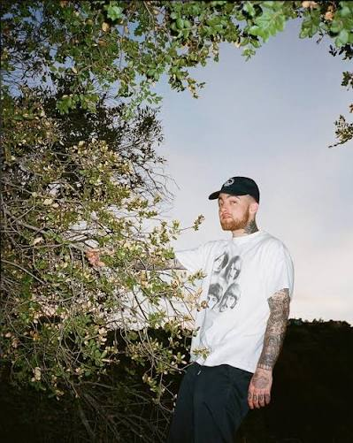
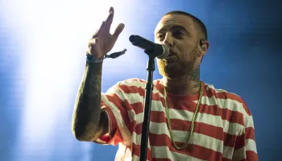

Release: March 23, 2012
Label: Rostrum Records
Producers: Primarily ID Labs, with tracks from Ritz Reynolds, Clams Casino, Sap, Iman Omari and more.
Recorded in the aftermath of the harsh Blue Slide Park critical reviews, Macadelic marked a massive tonal shift away from "frat rap" toward dark, psychedelic, introspective hip-hop. It introduced the complex internal themes Mac explored for the rest of his career.
The opening track "Desperado" features a pitch-shifted guitar sample from the Beatles' "Lucy in the Sky with Diamonds", setting the psychedelic, trippy mood for the entire project right out of the gate.
Track 6 "Fight the Feeling" featuring Kendrick Lamar famously ends with roughly 40 seconds of explicit, uncomfortable female moaning audio. Mac included it as an artistic statement on earthly distractions and temptations, fully aware it would embarrass listeners who played the tape out loud in public or in front of their parents.


Landing a feature from Lil Wayne—who was Mac's absolute childhood idol—was a massive milestone. Wayne recorded his verse while on tour, and Mac later recalled getting the audio back and crying tears of joy because it validated his growth as a respected artist in the hip-hop community.